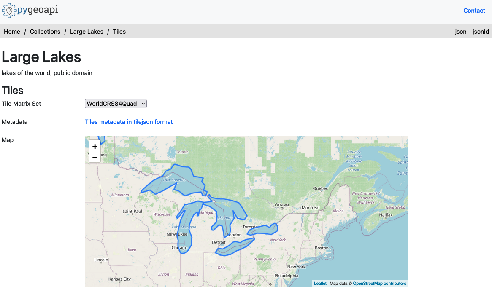
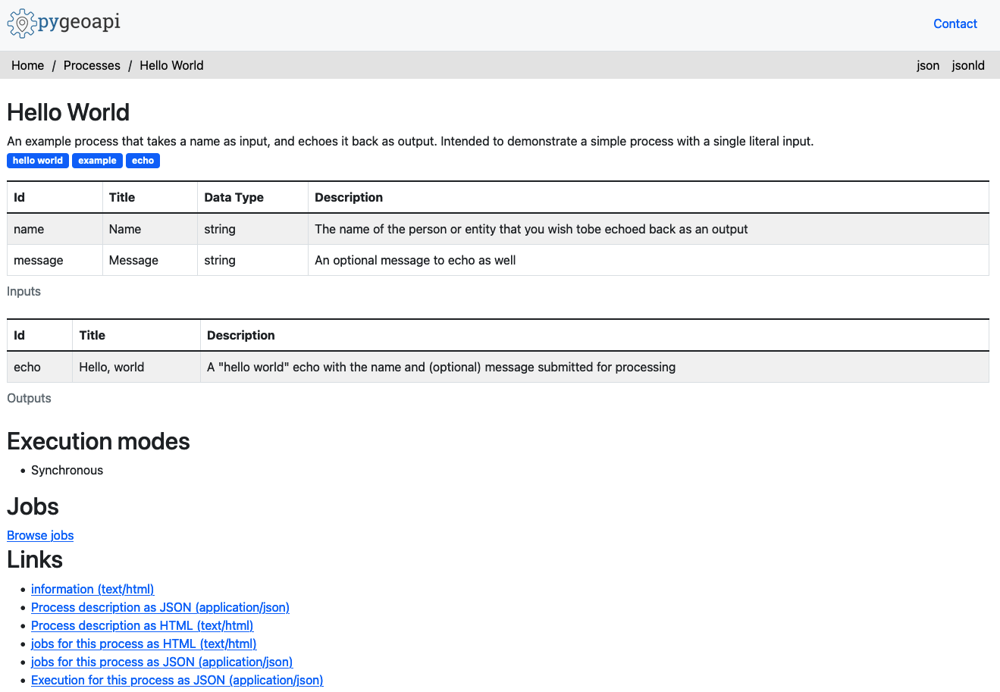

An OGC API to geospatial data


This presentation available at https://pygeoapi.io/presentations/fedgeoday2022
Table of contents
- Project overview
- Core capabilities
- Selected featured projects
- Roadmap
- Support
Project overview
Say hello to pygeoapi
 A Geopython project
A Geopython project- Created by Tom Kralidis in 2018 on Valentine's Day with ❤️
- OSGeo Project
Project Overview
- Geospatial data Web API framework via OGC API
- REST/JSON/OpenAPI/Swagger
- OGC Compliant
- OSGeo Project
- International team (Canada, Netherlands, Greece, Italy, New Zealand, United States, Spain)
- Numerous core contributors
- 21000 upstream contributors (dependencies)
Install in 5 minutes
python3 -m venv pygeoapi
cd pygeoapi
. bin/activate
git clone https://github.com/geopython/pygeoapi.git
cd pygeoapi
pip3 install -r requirements.txt
python3 setup.py install
cp pygeoapi-config.yml example-config.yml
vi example-config.yml # edit as required
export PYGEOAPI_CONFIG=example-config.yml
export PYGEOAPI_OPENAPI=example-openapi.yml
pygeoapi openapi generate $PYGEOAPI_CONFIG --output-file $PYGEOAPI_OPENAPI
pygeoapi serve
# in another terminal
curl http://localhost:5000 # or open in a web browser
Technical Overview
- Core abstract API; web framework agnostic (default Flask)
- YAML configuration (metadata, dataset connections)
- Automated OpenAPI document generation and data binding
- Robust plugin framework (data connections, formats, processing)
- Easy deployment (pip install, Docker, conda, UbuntuGIS)
- Minimal core dependencies

Provider plugin framework
- Features (Elasticsearch, PostgreSQL/PostGIS, CSV, GeoJSON, OGR, MongoDB, Esri)
- Coverages (xarray, rasterio)
- Tiles (MinIO, ZXY directory tree)
- Records (Elasticsearch, TinyDB)
- Implement your own!
Processing framework
- Expose Python workflow as processes
- Process manager support for job control (TinyDB)
- Implement your own!
Implementing your own Plugin
- Develop / propose / maintain as core plugin
- Develop / maintain in your own repository
schema.org

- Lower the barrier to data search
- HTML encoding is annotated as schema.org/Dataset to facilitate search engines
- Google dataset search locates pygeoapi datasets
Linked Data - JSON-LD
- JSON-LD provided as additional representation
- Default out of the box functionality for most pygeoapi resources / endpoints
- Additional configuration
Deploying
Numerous deployment options
- PyPI
- UbuntuGIS
- Docker
- Conda
- FreeBSD
Core Capabilities

OpenAPI

OGC API - Features

OGC API - Coverages
OGC API - Records

OGC API - Tiles

OGC API - Processes

OGC API - Environmental Data Retrieval
SpatioTemporal Asset Catalog (STAC)

HTML templating

Selected recent projects
US Geoplatform.gov
- US Geospatial Platform (Geoplatform) provides a central point of access to federal geospatial metadata, services and data
- Aligns with FAIR principles
- Powered by numerous FOSS4G components Aligns with FAIR principles
- 100+ National Geospatial Data Assets
geoconnex.us
- The Geoconnex project is about providing technical infrastructure and guidance to create an open, community-contribution model for a knowledge graph linking hydrologic features in the United States, published in accordance with Spatial Data on the Web best practives as an implementation of Internet of Water principles

River Runner
- OGC API - Features and OGC API - Processes implementation of pygeoapi supporting Global River Runner
- Examples
Meteorological Service of Canada GeoMet platform
- OGC web services platform of Canadian weather, climate and water data
- Realtime weather/hydrometric data
- Numerical weather prediction
- Hydrometric and Climate archives
- Gridded data extraction
British Geological Survey - OGCAPI Server
- BGS OpenGeoscience geospatial data
WIS2 in a box
- WMO Information System 2.0
- Event-driven weather/climate/water data exchange
- WMO Reference Implementation
- API component

Roadmap
Roadmap
- 1.0
- OGC API - Routes
- OGC API - Maps
- OGC API - Styles
- API Refactor
- Google BigQuery provider plugin
Support
Links
- Home: pygeoapi.io
- Twitter: twitter.com/pygeoapi
- Docs: docs.pygeoapi.io
- Demo: demo.pygeoapi.io
- GitHub: github.com/geopython/pygeoapi
- Docker: hub.docker.com/r/geopython/pygeoapi
- Chat: gitter.im/geopython/pygeoapi
- Mail: lists.osgeo.org/mailman/listinfo/pygeoapi
Thank you!
@tomkralidis @JMendesDeJesus @justb4 @pvgenuchten @tzotsos @alpha-beta-soup @francbartoli @doublebyte @webb-ben